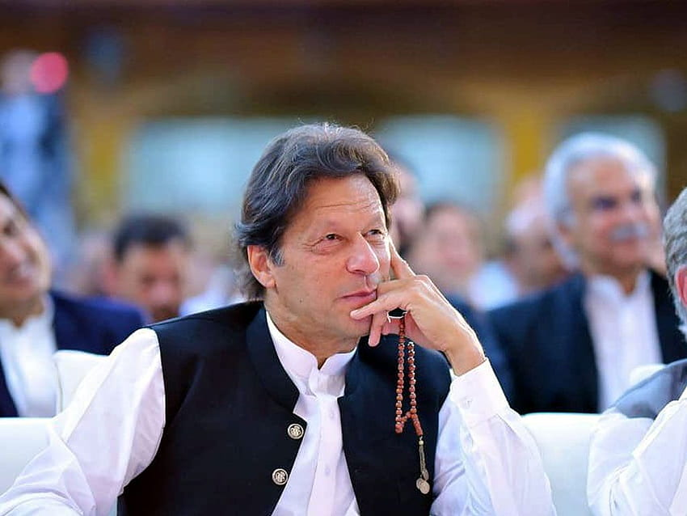

Current Affairs
Imran Khan

In September 2021, Imran Khan was the Prime Minister of Pakistan. Imran Khan is a prominent Pakistani politician, former international cricketer, and the founder of the Pakistan Tehreek-e-Insaf (PTI) political party. He has been a prominent figure in Pakistani politics for several years and has held various positions, including serving as the Prime Minister of Pakistan since August 2018.
- Relations
Pakistan has a history of military interventions in politics. Military coups and interference in civilian government affairs have led to political instability in the past. Although Pakistan has seen periods of civilian rule, the influence of the military on politics remains a contentious issue.
- Elections and Electoral Fraud
Allegations of electoral fraud and irregularities have often marred the democratic process in Pakistan. Disputed elections and claims of rigged voting have led to protests and political turmoil.
Corruption: Corruption is a longstanding issue in Pakistan, and it has been a major point of contention in the country's politics. Accusations of corruption have targeted politicians and public officials, leading to both legal and political crises.
Economic Challenges: Economic instability, inflation, and financial crises have also contributed to political turmoil in Pakistan. Protests and political movements often emerge in response to economic hardships.
- Ethnic and Regional Tensions
Pakistan is a diverse country with various ethnic and regional groups. Tensions between different ethnic groups and provinces can sometimes escalate into political crises.
- Religious and Extremist Movements
Pakistan has faced challenges from religious and extremist groups, which have occasionally disrupted the political landscape. These groups may engage in acts of terrorism and seek to influence the political agenda.
- Relations
Pakistan's foreign policy decisions, especially its relationship with neighboring countries like India and Afghanistan, can impact its domestic politics. International conflicts and alliances can sometimes lead to political crises within the country.
To get the most up-to-date information on the current political situation in Pakistan, I recommend consulting reliable news sources and staying informed about recent developments in the region.
Click here